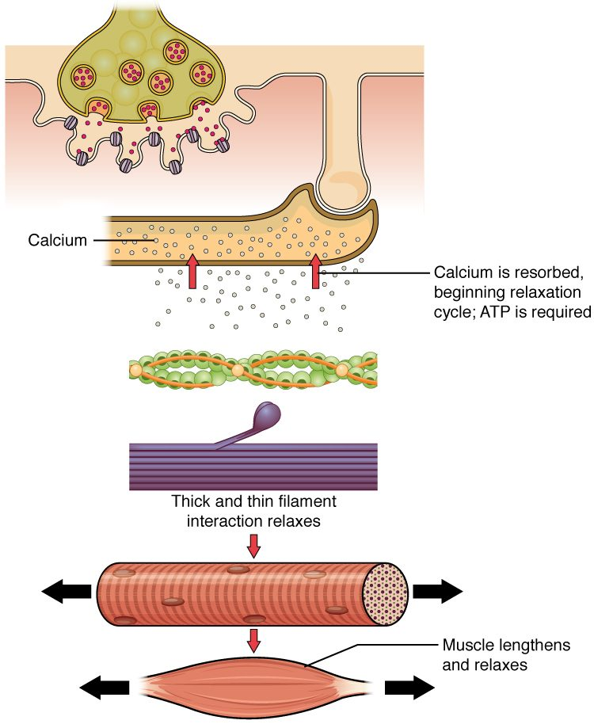

An action potential is an electrical event on a membrane. Contraction is a mechanical event among protein filaments deep inside the cell. Something has to connect the two, and in a skeletal muscle fiber that link takes about two milliseconds. This page walks through the excitation–contraction coupling steps: the muscle fiber action potential, its trip down the T tubules, the two proteins at the triad that open the calcium store, the troponin–tropomyosin switch, and the pumps that return the calcium so the fiber can relax.
From signal to pull
Snap your fingers. Between the moment a motor neuron's impulse reaches your finger muscles and the moment their filaments start to pull, several things happen in order: an electrical signal spreads over and into each fiber, a calcium store opens, and a protein switch on the thin filaments flips.
Excitation–contraction coupling (E-C coupling) is that sequence: the steps that link an action potential on the sarcolemma (the excitation) to the pulling of the myofilaments (the contraction). The link is calcium. The action potential releases calcium, and calcium turns on contraction.
- An action potential spreads along the sarcolemma and down the T tubules.
- At each triad, a voltage-sensing protein in the T tubule changes shape and pulls open calcium release channels in the sarcoplasmic reticulum.
- Calcium flows out of the SR into the sarcoplasm.
- Calcium binds troponin, which moves tropomyosin off the myosin-binding sites on actin.
- Myosin heads bind actin and pull, and the sarcomeres shorten.
The sections below take each step in turn, then run the sequence backward for relaxation.
The muscle fiber action potential
In the last topic, the end plate potential brought the sarcolemma next to the end plate to threshold. What follows is the muscle fiber action potential, and it works like the action potential you met in the electrical signals topic:
- Rest. The sarcolemma sits at about −85 to −90 mV.
- Depolarization. At threshold, voltage-gated sodium channels open, sodium rushes in, and the inside swings positive, to about +30 mV.
- Repolarization. The sodium channels close on their own, voltage-gated potassium channels open, and potassium flowing out returns the membrane to rest.
The whole event lasts only about 2 to 5 milliseconds. It starts at the end plate, near the middle of the fiber, and propagates toward both ends at about 3 to 5 meters per second. It is all-or-none, so every action potential in a fiber is the same size, and each one is followed by a brief refractory period.
| Neuron action potential | Skeletal muscle fiber action potential | |
|---|---|---|
| Resting potential | About −70 mV | About −85 to −90 mV |
| What brings it to threshold | Graded potentials adding up on the dendrites and cell body | The end plate potential at the neuromuscular junction |
| Channels | Voltage-gated sodium, then potassium | Voltage-gated sodium, then potassium |
| Duration | About 1 to 2 ms | About 2 to 5 ms |
| Conduction speed | Up to about 120 m/s in large, insulated axons | About 3 to 5 m/s |
| Where it goes | Along the axon to the axon terminals | Along the sarcolemma and down every T tubule |
| What it triggers | Neurotransmitter release | Calcium release from the SR |
Heart muscle cells are different: their action potential lasts about 250 to 300 ms, and the heart chapter explains why.
Down the T tubules
You met the T tubules in skeletal muscle structure: infoldings of the sarcolemma that run into the fiber and meet the terminal cisternae of the SR at triads. Because T tubule membrane is sarcolemma, the action potential does not stop at the surface. It travels down every T tubule, deep into the fiber, and reaches every triad within a millisecond or two. The myofibrils at the center of the fiber get the signal almost as soon as those at the edge.
At the triad: a voltage sensor pulls a channel open
Two proteins face each other across the narrow gap between a T tubule and a terminal cistern (Figure 1):
- The DHP receptor sits in the T tubule membrane. It is a voltage-sensing protein, built like a voltage-gated calcium channel. It is named for the dihydropyridines, a family of drugs that bind it. In skeletal muscle its job is to sense voltage: part of the protein carries charges and moves when the membrane depolarizes.
- The ryanodine receptor sits in the membrane of the terminal cistern. It is the SR's calcium release channel, named for ryanodine, a plant compound that binds it.
(Both are called "receptors" only because drugs bind them. Neither one binds a chemical messenger in the body. Think of the DHP receptor as the voltage sensor and the ryanodine receptor as the release channel.)
In skeletal muscle, the two proteins are physically linked. When the action potential depolarizes the T tubule membrane, each DHP receptor changes shape, and the shape change pulls on the ryanodine receptor it touches and opens it, like a hand pulling a plug. No chemical messenger crosses the gap: voltage alone does the work.
Calcium release from the sarcoplasmic reticulum
At rest, pumps keep the calcium concentration inside the SR thousands of times higher than in the sarcoplasm. When the ryanodine receptors open, calcium flows out of the terminal cisternae down that steep gradient. Within a few milliseconds, the calcium concentration around the myofilaments rises roughly a hundredfold.
This is calcium release from the sarcoplasmic reticulum, and it has two features worth remembering:
- The calcium comes from inside the fiber. A skeletal muscle fiber does not need calcium from the extracellular fluid to contract. Placed in a bath with no calcium and stimulated directly, it keeps contracting, because its trigger is voltage and its calcium comes from the SR.
- The release channels close when the voltage returns. When the action potential ends, the DHP receptors return to their resting shape, and the ryanodine receptors close. Each action potential releases one pulse of calcium.
Heart muscle works differently. There the voltage sensor and the release channel are not linked, and calcium entering from outside the cell is what opens the release channels. The heart chapter covers that difference and why heart contraction does depend on calcium outside the cell.
Troponin and tropomyosin regulation
Remember the switch on the thin filament from skeletal muscle structure: tropomyosin lies over the myosin-binding sites on actin, and troponin holds it there. Here is how calcium flips it:
- Calcium binds troponin. One of troponin's three proteins has calcium-binding sites. At resting calcium levels they are empty; after release they fill.
- Troponin changes shape. With calcium bound, troponin loosens its hold on actin.
- Tropomyosin rolls deeper into the groove. Released by troponin, the tropomyosin rod shifts along the actin strands and uncovers the myosin-binding sites. Each tropomyosin rod covers seven actin molecules, so one shift uncovers seven sites at once.
- Myosin heads bind actin and pull. The energized myosin heads, which were blocked until now, attach to the uncovered sites and pull the thin filaments toward the M line. The next topic follows that pulling cycle step by step.
This is troponin and tropomyosin regulation. Calcium does not power contraction; ATP does that. Calcium is the switch that allows it. As long as calcium stays bound to troponin, and ATP is available, the filaments keep pulling. When calcium falls, the switch turns off.
The whole sequence, and how long it takes
Figure 2 puts the neuromuscular junction and E-C coupling together, from the nerve ending to the shortened muscle.
![A sequence from top to bottom. A nerve ending on a muscle fiber releases dots from its vesicles into the gap below it, where they bind channels in the folded fiber membrane. A red arrow shows the electrical signal spreading along the membrane and down a tube into the fiber. The tube touches a long sac full of small circles, and red arrows show the circles pouring out of the sac. Below, the circles attach to small round proteins on a beaded filament, and a myosin head carrying ADP and phosphate swings against it. At the bottom, the fiber and then the whole muscle are drawn shorter and thicker, with arrows pressing in from both ends.](../figures/os-10-8.jpg)
The steps do not all take the same time. Figure 3 shows one fiber's response to a single stimulus:
- The action potential is over within about 5 ms.
- Calcium in the sarcoplasm peaks a few milliseconds later, in under 10 ms, then falls over the next 40 to 50 ms as it is pumped back.
- Force builds more slowly, peaking around 35 ms, after calcium has already begun to fall, and fades over about 100 ms.
![Three stacked graphs on one time axis from 0 to 120 milliseconds after a single stimulus to a skeletal muscle fiber. The action potential on the sarcolemma is a brief spike, over within about 5 milliseconds. Calcium in the sarcoplasm rises just after it, peaks in under 10 milliseconds and falls back over the next 40 to 50 milliseconds as it is pumped into the sarcoplasmic reticulum. Force rises more slowly, peaks at about 35 milliseconds, after calcium has begun to fall, and returns almost to zero by about 110 milliseconds.](../figures/ec-coupling-timing.svg)
Force lags because the filaments take time to take up the slack in the tendon and connective tissue before the pull is felt, and it outlasts the action potential because calcium stays until the pumps remove it. That gap matters: if a second action potential arrives before the calcium is cleared, more calcium is released on top of what is left. A later topic in this chapter shows how your nervous system uses that to grade the force of a muscle.
Muscle relaxation
Muscle relaxation is the return of a fiber to rest after contraction, and it is an active process. It happens when the chain is reversed at each link (Figure 4):
- The motor neuron stops firing. No more acetylcholine is released.
- Acetylcholinesterase clears the cleft. The end plate returns to rest, and no new action potentials start.
- The release channels close. With the sarcolemma and T tubules back at rest, the DHP receptors return to their resting shape, and the ryanodine receptors close.
- Calcium pumps return calcium to the SR. The SR membrane is packed with calcium pumps, each a calcium ATPase that moves two calcium ions into the SR for every ATP it splits. This is primary active transport, against a steep gradient.
- Calcium leaves troponin. As the sarcoplasmic calcium falls back to resting levels, calcium comes off troponin.
- Tropomyosin covers the binding sites again. The myosin heads can no longer bind actin, and the filaments stop pulling.
- The fiber returns to its resting length. Its own elastic proteins, the pull of opposing muscles and gravity lengthen it. A muscle fiber cannot push itself longer.

Relaxation needs ATP twice over: the calcium pumps use it, and, as the next topic shows, myosin heads need a fresh ATP to let go of actin. A fiber that runs out of ATP cannot relax.
| During contraction | During relaxation | |
|---|---|---|
| Motor neuron | Firing | Silent |
| Sarcolemma and T tubules | Carrying action potentials | At rest, about −90 mV |
| Ryanodine receptors | Open, pulled by the DHP receptors | Closed |
| SR calcium pumps | Working, but outpaced by release | Working, and now winning |
| Calcium in the sarcoplasm | High | Low |
| Troponin | Calcium bound | Calcium free |
| Myosin-binding sites on actin | Uncovered | Covered by tropomyosin |
When E-C coupling goes wrong
Low blood calcium causes spasms, not weakness
You might expect hypocalcemia to weaken skeletal muscle, since calcium triggers contraction. It does the opposite. Skeletal muscle takes its calcium from the SR, so low blood calcium does not starve the filaments. Instead, low calcium in the extracellular fluid makes voltage-gated sodium channels in nerve and muscle membranes open more easily, closer to the resting potential. Nerves and muscle fibers then fire on their own, and muscles cramp and spasm: the hands and feet can lock in painful contractions.
A leaky release channel
In a rare inherited disorder, faulty ryanodine receptors open too easily. Exposure to certain anesthetic gases, or to succinylcholine, makes them leak calcium continuously. Calcium stays high, muscles lock rigid, the calcium pumps and myosin heads burn ATP nonstop, and the heat they release can drive body temperature above 40 °C quickly. The antidote, dantrolene, blocks ryanodine receptors so the SR stops leaking calcium. People with the gene look healthy until they meet the trigger, which is why anesthesia teams ask whether any relative had a serious reaction to anesthesia.